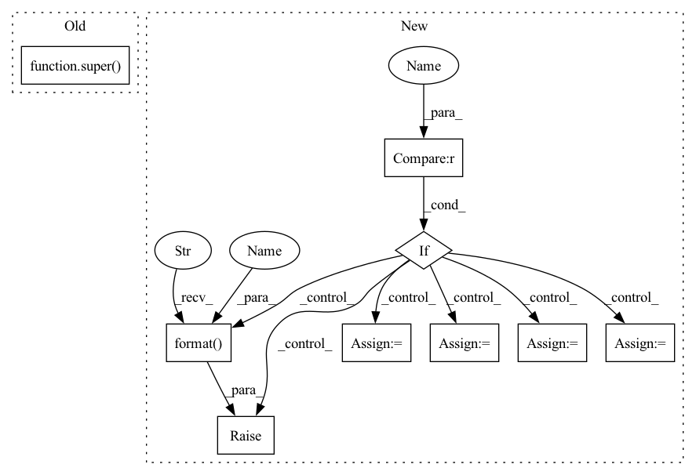

Pattern ID :21410

Before Change
cached=False,
weight=True,
bias=True):
super(SGConv, self).__init__()
self._cached = cached
self._cached_h = None
self._k = k
After Change
bias=True):
super().__init__()
if norm not in ("none", "both", "right", "left"):
raise DGLError("Invalid norm value. Must be either "none", "both", "right" or "left"."
" But got "{}".".format(norm))
self._in_feats = in_feats
self._out_feats = out_feats
self._cached = cached
self._cached_h = None
self._k = k
self._norm = norm
self._add_self_loop = add_self_loop
self.linear = Linear(in_feats, out_feats, weight=weight, bias=bias)
def reset_parameters(self):
Reinitialize learnable parameters.
In pattern: SUPERPATTERN
Frequency: 3
Non-data size: 9
Instances
Fragment ID: 68223377
Project Name: edisonleeeee/graphwar
Commit Name: c43665fd30401c63acbd50175da1880509a52d21
Time: 2021-12-06
Author: cnljt@outlook.com
File Name: graphwar/nn/sgconv.py
M Class Name: SGConv
N Class Name: SGConv
M Method Name: __init__(9)
N Method Name: __init__(7)
M Parent Class: nn.Module
N Parent Class: nn.Module
M File Name: graphwar/nn/sgconv.py
N File Name: graphwar/nn/sgconv.py
M Start Line: 70
M End Line: 85
N Start Line: 90
N End Line: 108
'>
Before Change
cached=False,
weight=True,
bias=True):
super(SGConv, self).__init__()
self._cached = cached
self._cached_h = None
self._k = k
After Change
bias=True):
super().__init__()
if norm not in ("none", "both", "right", "left"):
raise DGLError("Invalid norm value. Must be either "none", "both", "right" or "left"."
" But got "{}".".format(norm))
self._in_feats = in_feats
self._out_feats = out_feats
self._cached = cached
self._cached_h = None
self._k = k
self._norm = norm
self._add_self_loop = add_self_loop
self.linear = Linear(in_feats, out_feats, weight=weight, bias=bias)
def reset_parameters(self):
Reinitialize learnable parameters.
'>
Fragment ID: 68223379
Project Name: edisonleeeee/graphwar
Commit Name: c43665fd30401c63acbd50175da1880509a52d21
Time: 2021-12-06
Author: cnljt@outlook.com
File Name: graphwar/nn/sgconv.py
M Class Name: SGConv
N Class Name: SGConv
M Method Name: __init__(9)
N Method Name: __init__(7)
M Parent Class: nn.Module
N Parent Class: nn.Module
M File Name: graphwar/nn/sgconv.py
N File Name: graphwar/nn/sgconv.py
M Start Line: 70
M End Line: 85
N Start Line: 90
N End Line: 108
'>
Before Change
def __init__(self, learning_rate, momentum=0.0, *args, **kwargs):
super().__init__(learning_rate, momentum, *args, **kwargs)
class Lamb(object):
After Change
def __init__(self, learning_rate=0.01, momentum=0.0, nesterov=False, weight_decay=0.0, grad_clip=None):
self.learning_rate = learning_rate
self.momentum = momentum
if weight_decay < 0.0:
raise ValueError("weight_decay should not smaller than 0.0, but got {}".format(weight_decay))
self.weight_decay = float(weight_decay)
self.grad_clip = grad_clip
self.nesterov = nesterov
self.sgd = tf.optimizers.SGD(learning_rate=self.learning_rate, momentum=self.momentum, nesterov=self.nesterov)
def apply_gradients(self, grads_and_vars):
if grads_and_vars is None:
'>
Fragment ID: 68223411
Project Name: tensorlayer/tensorlayerx
Commit Name: fc4e6ad217c1fe6ef9637601309a42fdbd7ac75e
Time: 2022-03-25
Author: jiaronghan@outlook.com
File Name: tensorlayerx/optimizers/tensorflow_optimizers.py
M Class Name: Momentum
N Class Name: Momentum
M Method Name: __init__(6)
N Method Name: __init__(3)
M Parent Class: object
N Parent Class: tf.compat.v1.train.MomentumOptimizer
M File Name: tensorlayerx/optimizers/tensorflow_optimizers.py
N File Name: tensorlayerx/optimizers/tensorflow_optimizers.py
M Start Line: 314
M End Line: 314
N Start Line: 617
N End Line: 625